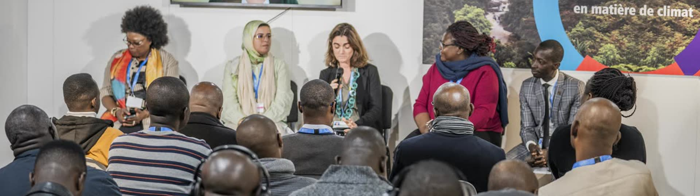

Le panneau de droite de la vitrine, à sa vraie place, sur grand écran (photo dessous) et sur téléphone (aplat bleu nuit). Même contenu que la production : trois activités au plus, les chiffres de l'édition, le lien vers la programmation.
La couleur du papier est celle de la journée spéciale de l'activité, réglée au back-office. Hors journée, papier blanc : le jaune des post-it classiques veut dire « en cours » sur le site. Le direct garde son étiquette rouge.
Le panneau disparaît : trois notes collées sur la photo par un ruban, légèrement de travers, décalées comme posées à la main. Au survol ou au clavier, la note se redresse.

Téléphone, 375 px
Un bloc de post-it : la prochaine activité en grand sur la feuille du dessus ; les suivantes dépassent dessous et montrent déjà la couleur de leur journée. Les flèches arrachent la feuille pour passer à la suivante.
Téléphone, 375 px
Le panneau de verre reste ; chaque heure est écrite sur un marque-page adhésif qui dépasse de son bord gauche, à la couleur de la journée (rouge pour le direct).
Téléphone, 375 px
Les mêmes marque-pages, tenus par un bout de ruban comme les notes du tableau d'affichage, et un peu de travers. Au survol de l'activité, le marque-page se redresse.
Téléphone, 375 px
Les mêmes marque-pages, piqués d'une épingle bleu nuit et pendant légèrement autour d'elle. L'épingle ne prend pas de couleur : le rouge reste au direct.
Téléphone, 375 px
Une direction (ou un mélange : par exemple le ruban de la 1 sur les feuilles de la 2).
Papier hors journée : blanc, comme ici, ou jaune post-it malgré le sens « en cours » du jaune ailleurs sur le site.